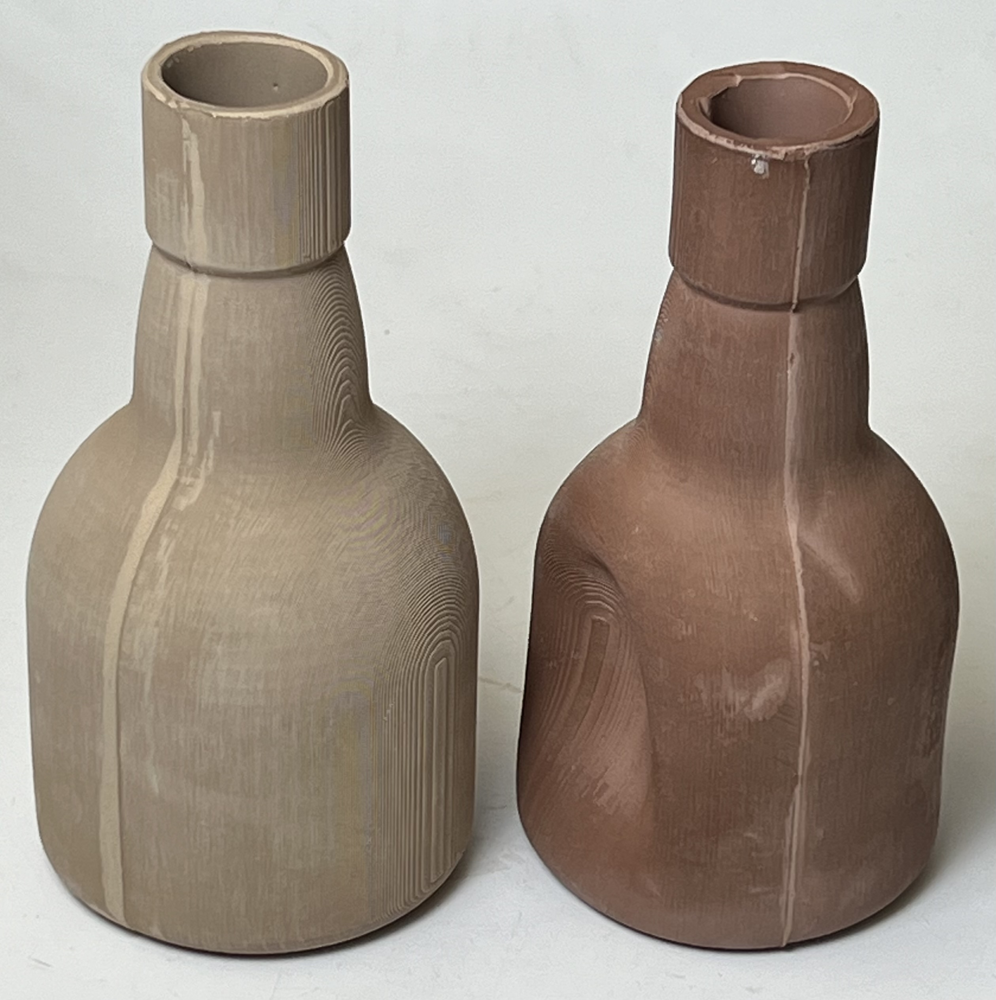

Notes
Darvan is a deflocculant used to disperse ceramic suspensions to minimize their water content. It is a liquid alternative to the long-popular sodium silicate. A typical proportion in an easy-to-deflocculate porcelain is about 0.35 Darvan to 100 clay powder. For an iron-oxide-containing stoneware up to double that might be needed. Darvan has advantages over sodium silicate. Typically soda ash is not needed as a complement and Darvan does not attack plaster molds. In addition, slurries are much less sensitive to over-deflocculation and are more stable. It is thus easier to reprocess scrap. However, a number of engineers still prefer using a sodium silicate:soda ash mix to control thixotropic properties better, especially if little scrap is being added.
There are several different varieties of Darvan:
Compared to the conventional soda ash-sodium silicate system, these polyelectrolytes produce slips with longer casting range, higher solids content, improved viscosity stability, fewer "soda" or "hard spots", and significantly increased mold life. Slips also tend to reclaim better without the need for constant adjustments with more deflocculant.
Darvan No. 7 is a high molecular weight, long-chain polymer that has been used successfully as a general-purpose dispersing agent for both ceramic bodies and glazes. Like 811 and 812, this poly-electrolyte shows the advantages mentioned above. Slips properly prepared with Darvan No. 7 show little tendency to thicken on standing (thus this version is considered better for glazes).
Darvan 811 and Darvan 812 are low molecular weight short-chain polymers for use in vitreous and semivitreous bodies and glazes. They are also useful with high iron bodies (bodies to which raw red iron oxide is being added).
Darvan 811-D is a dry granular product with great potential for low-moisture castables and in other refractory products, where a dispersing agent in the powdered form is preferred.
Darvan 821-A and C are ammonium types for electronic and specialty ceramic products. They have low ash content and work well when prolonged ball milling or shear mixing is necessary.
The active agent in Darvan is polyacrylic acid. Its molecules are negatively charged along their length. They attach to clay particles and cause them to repel each other.
There are cautions with this material:
-It has a shelf life of two years, thus you should only buy material that has a manufactured date on the label.
-Some types cannot go below 40F without detrimental effects on their performance. Darvan definitely cannot be frozen or it will not work as expected. Low temperatures can encourage the settling of certain components, if you buy it in drum lots consider rolling the drum around to mix it up if you suspect this has happened.
-The age determines the condition (and its deflocculating capacity). If you have been using an older material and buy a new freshly packaged one it can be easy to over-deflocculate a slurry. Be flexible in the amount used and conservative in the initial amount added.
Although the #811 grade is recommended for high iron bodies, test first to see if it is actually any better than #7 in your application. Although it might be possible to achieve higher specific gravities with #811, these might not cast as well as a lower SG one made using No. 7.
Related Information
The bottle on the right was cast from over-deflocculated slip

This picture has its own page with more detail, click here to see it.
The terra cotta casting body on the right, L4170B, normally casts really well (even better than the M370 on the left). Even though we have made this many times … today it is not working right. It took twice the amount of time in the mold to build up the needed thickness. It took three times the normal amount of time to release from the mold, when it finally did it wanted to turn inside out on pour (note the indent in the side). It also came out of the mold very soft and pliable. After drying, the surface, especially around the rim, has a hard film, it is difficult even to scratch. While the slurry itself is fluid and does not settle, it has the consistency of syrup. The problem is clearly over-deflocculation - this slurry is normally easy-to-deflocculate and performs very well. How did this happen? We are finding our new shipment of Darvan is more potent (therefore not as much is needed). Darvan has a shelf life, 2 years, the jar we were using was likely older than that thus more was needed.
Links
| Articles |
Understanding the Deflocculation Process in Slip Casting
Understanding the magic of deflocculation and how to measure specific gravity and viscosity, and how to interpret the results of these tests to adjust the slip, these are the key to controlling a casting process.
|
| Articles |
Binders for Ceramic Bodies
An overview of the major types of organic and inorganic binders used in various different ceramic industries.
|
| Materials |
Sodium Silicate
A sticky, viscous liquid. The most common deflocculant used in ceramics. Also used as a bonding agent.
|
| Materials |
Acumer Dispersant Polymer
|
| Typecodes |
Electrolyte
Materials used to control slurry properties of glazes and slips (vicosity, specific gravity).
|
| URLs |
http://www.vanderbiltminerals.com/product_categories/product_listing/category/ceramics-products-darvanreg-dispersing-agents-whiteware-tile-sanitaryware-p
Darvan product page
|
| URLs |
https://www.vanderbiltminerals.com/resources/Minerals_and_Chemical_for_Ceramics_and_Refractories_web.pdf
Vanderbilt Minerals for Ceramics Technical Sheet
Includes Vansil, Pyrax, Peerless, Dixie, Veegum, Vanzan, Darvan.
|

PayPal | No tracking, No ads, No paywall, No transient content!
Just organized, concise information constantly updated and improved.
Was this helpful? Consider supporting me. |
|
By Tony Hansen
Follow me on
       |  |
Got a Question?
Buy me a coffee and we can talk 

https://digitalfire.com, All Rights Reserved
Privacy Policy